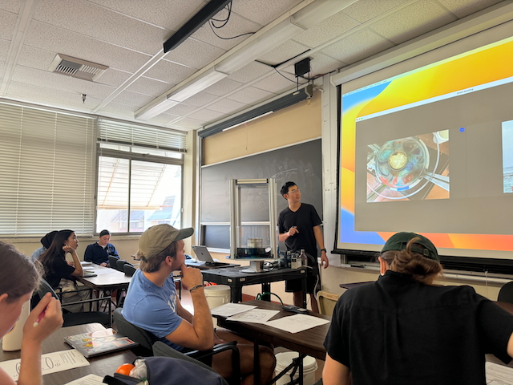

Physical Oceanography
During my PhD at UCLA, I TA for the Physical Oceanography course (AOS103). The discussion class involves a combination of chalkboard and experiment demonstration.
During my PhD at UCLA, I TA for the Physical Oceanography course (AOS103). The discussion class involves a combination of chalkboard and experiment demonstration.
During my time at National Central University in Taiwan, I taught an undergradute course on UAV and Pix4D image processing as an Intructor. I designed the course to be very hands-on and project-based, with a focus on practical skills and real-world applications. The students learned how to operate UAVs, collect aerial imagery, and process the data using Pix4D software to create 3D models and maps. The course was well-received by the students and provided them with valuable skills in geospatial analysis and remote sensing.